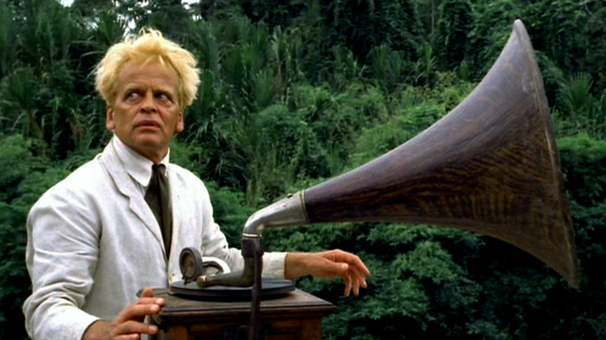

Who is Fitzcarraldo?
Fitzcarraldo, (real name Fitzgerrald) is Irish, loves the opera, rubber, and a French woman called Molly (she may be Italian, not sure...).
This is Molly, played by Claudia Cardinale. She likes wine.

Fitzcarraldo's game
- Buy a steam boat
- Sail up a river surrounded by canibals
- Drag the steam boat over a mountain
- Make a fortune selling rubber and build an opera in the jungle
His crew
A make shift crew that was assembled at the settlement